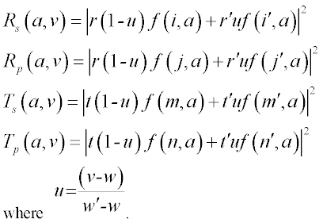
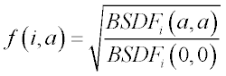

Specify angular properties for reflection and transmission.
Syntax
COATINGS [ k ] MODELS i j m n
r t r' t' r" t" ... [ 'name' ]
:
COATINGS [ k ] MODELS
r i j t m n r' i' j' t' m' n' r" ... [ 'name' ]
:
| Option | Description |
|---|
| k | starting coating number |
| r r' r" ... | real energy (or complex amplitude) reflectances |
| t t' t" ... | real energy (or complex amplitude) transmittances |
Remarks
- Starting with coating k
coatings with real energy (or complex amplitude) reflectances r
and transmittances t are entered.
- The default value for k
is one more than the largest coating number defined and is set to one at the start
of program processing.
- Separate angular properties can be
specified by using previously defined (usually RAWDATA) MODELS where:
| i | Model for reflected S polarization |
| j | Model for reflected P polarization |
| m | Model for transmitted S polarization |
| n | Model for transmitted P polarization |
- Anisotropic surface models are allowed in
this context.
- Optionally, groups of six numbers can be
entered so that each group corresponds to a wavelength entered on the last multiple
WAVELENGTH(S) command. For example, the actual reflectivities
and transmissions at an incidence angle ν and a wavelength
b between the first two WAVELENGTH(S)
w w' would be:

- In the above equations, r,
r' and t, t' are the entered complex amplitudes or the
square roots of the real energy coefficients. The f is a
normalized angular amplitude:

COATINGS Examples